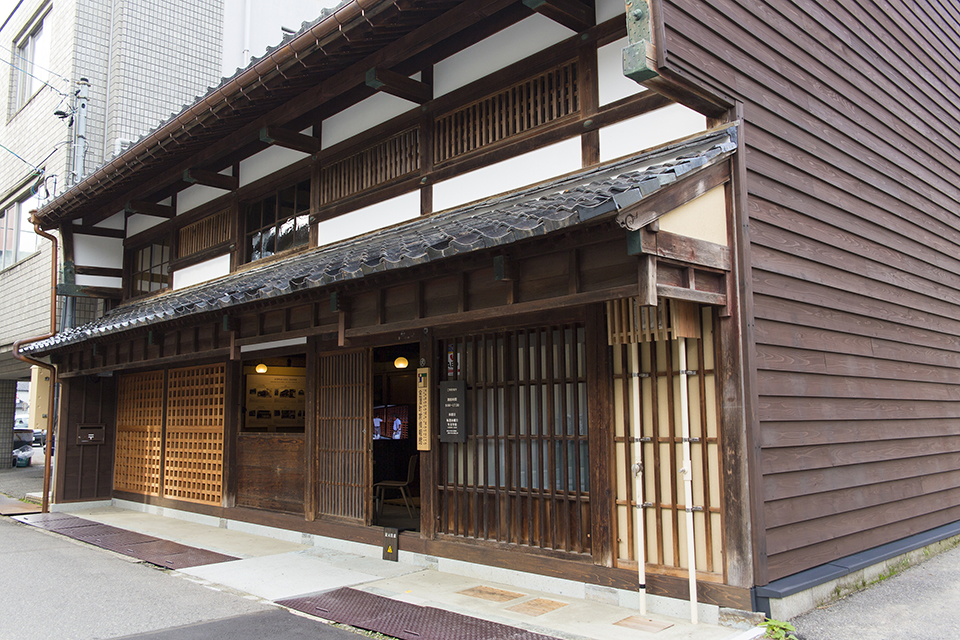

ACCESS
台分の専用駐車場をご用意しております。
周辺は一方通行が多いため、車でお越しの方は下記の地図を参考にお気をつけてお越しください。
バスでお越しの方は、「香林坊」が最寄りのバス停となります。
（バス停より徒歩約分）
We reserve four parking space.
Please take care that there are many one-way streets around creava.
When you come to creava by bus, get off the closest bus stop “Korinbo” and take 8 minutes walk from there.
MAP
ADDRESS
石川県金沢市長町
Nagamachi Kanazawa-shi Ishikawa Japan
OPEN HOURS
営業時間 : 定休日 : 水曜日・木曜日
Open Closed on Wednesdays and Thursdays
TEL
076-231-4756

駐車場側からレストラン・陶芸教室への通り抜けも可能です。
Passing through from the parking to the restaurant or ceramics studio is also available.